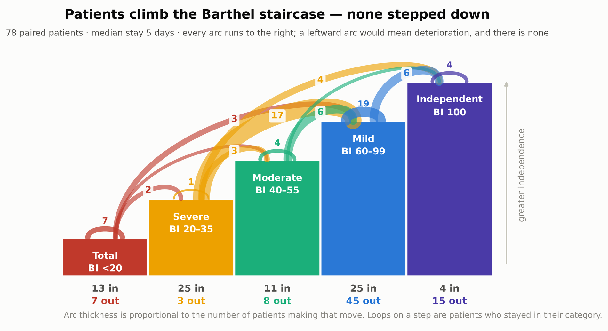
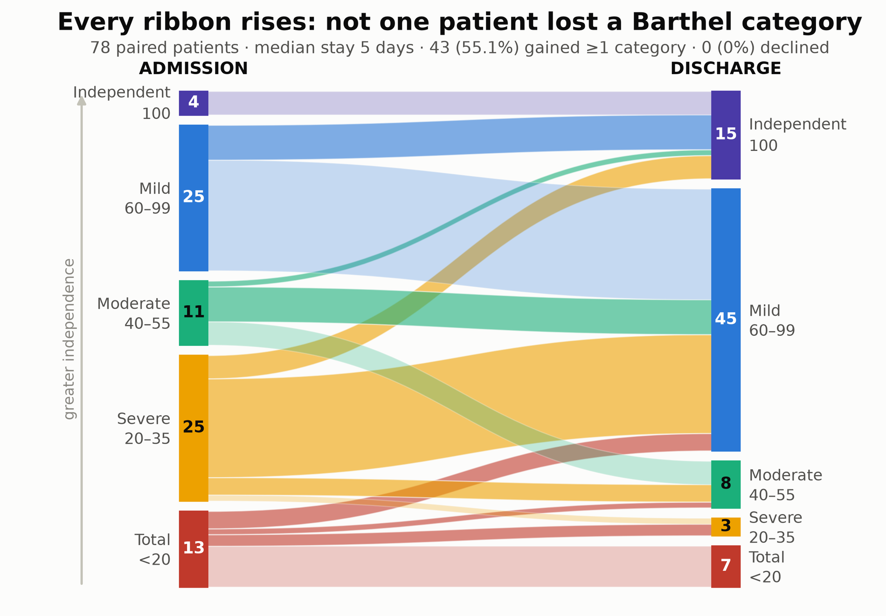
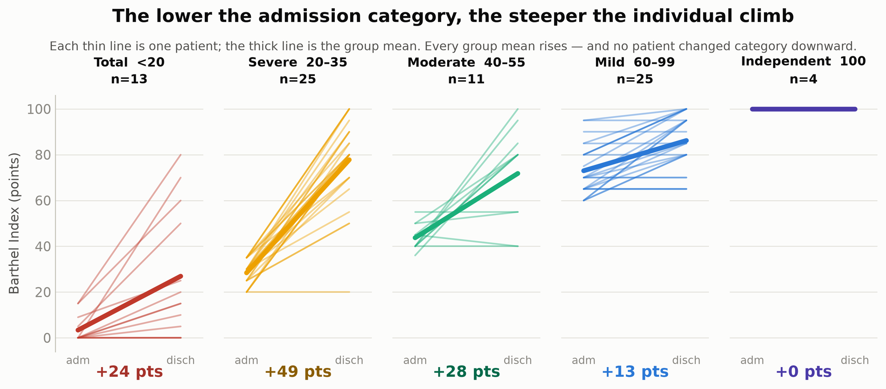
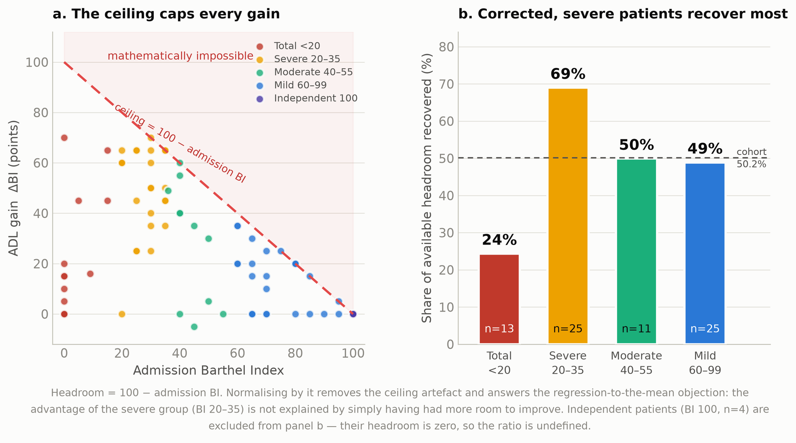
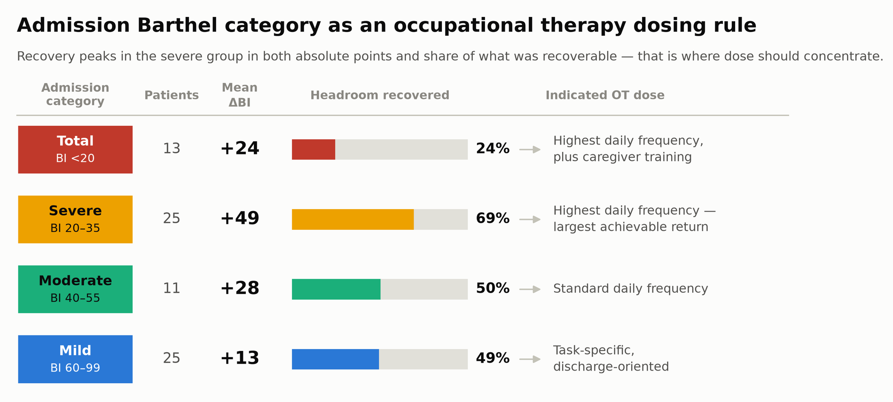

Stroke is the third leading cause of death and disability worldwide. Evidence supporting occupational therapy (OT) within interdisciplinary acute neurorehabilitation — alongside physiotherapy and speech-language pathology — remains limited. This study determined the relationship between admission functional status and the magnitude of ADL recovery during stroke hospitalisation, from an OT perspective.
Retrospective design without a control group, so causality cannot be attributed to OT. Attrition was non-random: the 26 of 104 patients without a paired Barthel were older (76.5 vs 69.8 years) with longer stays. Discharge Barthel is a hospital measurement, and transfer to home performance is not established.


Admission Barthel significantly predicted functional gain (r = −0.446; p < 0.001), with a mean gain of +27.9 points over a median stay of five days. Of 78 paired patients, 43 (55.1%) improved by at least one Barthel category and none descended a category; 98.7% showed no decline in score, one patient losing 5 points without changing category. Recovery was independent of stroke subtype (H = 2.33; p = 0.311).
The severe group (BI 20–35) gained most in absolute terms: +49 points, with 21 of 25 patients reaching mild dependence or independence at discharge.


Because the Barthel ceiling caps possible gain, recovery was normalised by the margin actually available: ΔBI ÷ (100 − admission BI). The severe group recovered 69% of what was recoverable against 50.2% for the cohort, so its advantage is not an artefact of having had more room to improve. Totally dependent patients (BI <20) regained only 24% of their own margin.

Cognition. Age was associated with cognitive change (r = 0.316; p = 0.008); the 76–90 group showed the greatest gain (ΔMMSE +2.7; p = 0.005), explained by a ceiling effect in younger patients. Discharge independence (BI ≥ 60) ranged from 81.0% (≤60 years) to 40.0% (>90 years).
Acute stroke hospitalisation is a primary neurorehabilitation window, not a pre-rehabilitation waiting period. The inverse relationship between admission Barthel and recovery magnitude supports BI-based categorisation of OT session frequency: greater impairment warrants higher daily intervention intensity — a rule supported by nationwide 2025 evidence showing that high-dose acute rehabilitation benefits most those with severe baseline ADL impairment.
The absence of functional-category deterioration and the 84.0% recovery rate among severely impaired patients (BI 20–35) within a five-day median stay provide clinical evidence for dedicated occupational therapy staffing in acute stroke units.